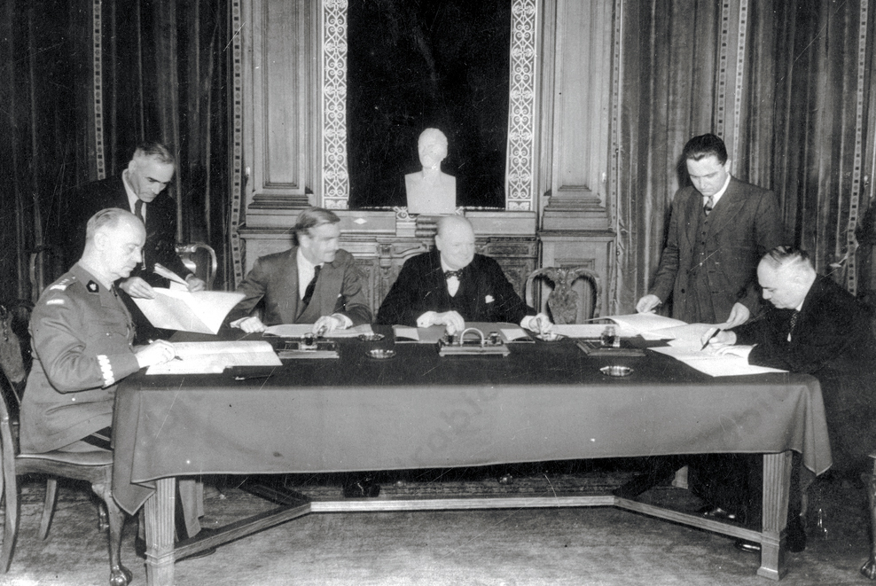
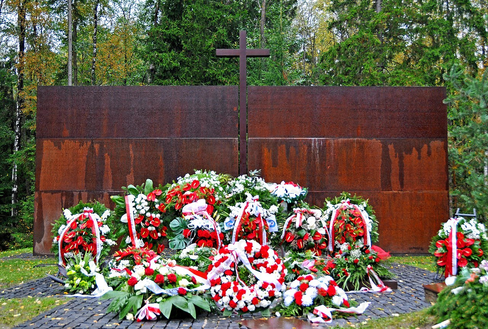

Zadanie 1
Po klęsce Polski we wrześniu 1939 r. zachowano ciągłość władz na emigracji poprzez:
- przeniesienie się z Rumunii do Francji, a następnie Londynu,
- zyskanie uznania przez znaczną część państw, dzięki czemu rząd na uchodźstwie mógł podejmować decyzje i prowadzić negocjacje z aliantami,
- odtworzenie polskiej armii na Zachodzie,
- powołanie Delegatury Rządu na Kraj jako organu administracji państwowej na terenach okupowanych,
- zawieranie układów z innymi państwami (np. układ Sikorski-Majski),
- reprezentowanie interesów Polski na arenie międzynarodowej.
Zadanie 2
Skutki paktu Sikorski-Majski:
- uwolnienie Polaków więzionych w sowieckich łagrach,
- szansa na powrót naszych rodaków do ojczyzny,
- Polacy wypuszczeni z więzień i aresztów zostali objęci amnestią,
- utworzenie polskiej armii na terytorium ZSRR,
- przywrócenie stosunków między Polską a ZSRS,
- nastąpiła wymiana ambasadorów pomiędzy dwoma państwami,
- wzajemna pomoc i wsparcie w walce z Niemcami,
- potwierdzenie nieważności paktu Ribbentrop-Mołotow z 1939 r.,
- w układzie Sikorski-Majski nie uregulowano sprawy powojennej wschodniej granicy Polski.

Podpisanie układu Sikorski-Majski w Londynie 30 lipca 1941 r., źródło zdjęcia: Wikimedia Commons.
Zadanie 3
Okoliczności ujawnienia zbrodni katyńskiej:
11 kwietnia 1943 r. niemiecka Agencja Transocean poinformowała o "odkryciu masowego grobu ze zwłokami 3.000 oficerów polskich" w Katyniu. 13 kwietnia informacje te potwierdzono na konferencji w Berlinie. Ten dzień wskazuje się za symboliczną rocznicę Zbrodni Katyńskiej. Sowieckie Biuro Informacyjne 15 kwietnia odpowiedziało, że polscy jeńcy zostali zamordowani przez Niemców. Generał Władysław Sikorski pamiętał, że od lata 1941 r. bezskutecznie próbował uzyskać od Stalina informacje o losie polskich oficerów. Przywódca ZSRR twierdził wtedy, że przebywają oni na terenie Mandżurii. Rząd RP na uchodźstwie polecił swojemu przedstawicielowi w Szwajcarii zwrócić się do Międzynarodowego Czerwonego Krzyża z prośbą o powołanie komisji do zbadania odkrytych grobów. 17 kwietnia 1943 r. strona polska złożyła w tej sprawie oficjalną notę w Genewie. Dowiedziała się wówczas, że również Niemcy zwrócili się do MCK o wszczęcie dochodzenia. Władza niemiecka chciała w ten sposób sprowokować konflikt pomiędzy aliantami.
Wpływ ujawnienia zbrodni katyńskiej na sytuację międzynarodową Polski:
- zerwanie stosunków dyplomatycznych między Polską a ZSRS,
- Stalin miał już plan co do Polski - chciał stworzyć w Polsce podporządkowany sobie rząd składający się z polskich komunistów,
- Stalin oskarżył gen. Sikorskiego o współpracę z Niemcami,
- osłabienie znaczenia polski w obozie alianckim,
- w sprawie katyńskiej Polacy nie uzyskali wsparcia ze strony przywódców mocarstw zachodnich,
- Niemcy zorganizowali własne dochodzenie w sprawie katyńskiej - eksperci jednomyślnie podpisali sprawozdanie, w którym stwierdzali, iż egzekucje na polskich jeńcach wykonano w marcu i kwietniu 1940 r.

Pomnik i ołtarz w Katyniu, źródło zdjęcia: Wikimedia Commons.